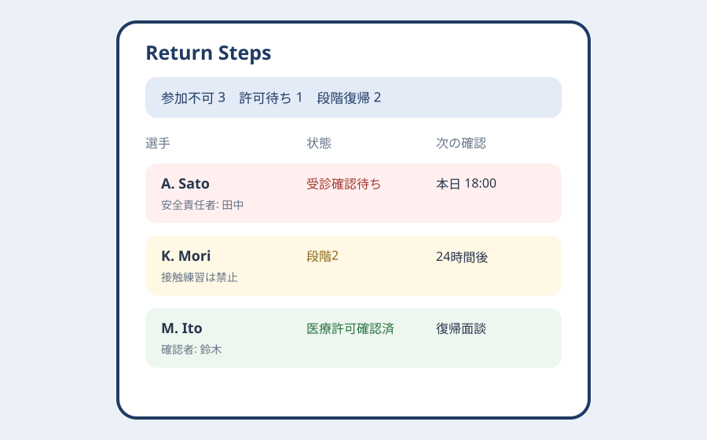
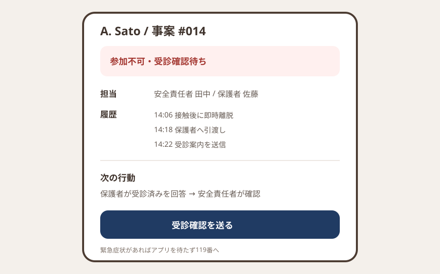

Question Note
ジュニア競技の脳振盪疑いから段階的復帰を支える小規模サービス案


全体像
脳振盪が疑われる選手は本人の「大丈夫」だけで復帰させず、プレーを止め、専門医へつなぎ、症状に応じた段階的復帰を行う必要があります。地域クラブでは、試合会場の初動、保護者への引継ぎ、受診結果、次回練習で許される負荷が別々の連絡に散りやすいのが実務上の弱点です。
課題は診断支援ではなく、即時離脱、医療機関への引継ぎ、段階的復帰と許可の確認をクラブ運用として閉じることです。
切り出す社会課題と対象利用者
初年度は医師が常駐しない20のジュニアサッカー・ラグビークラブに限定します。指導者、保護者、クラブ安全責任者が使い、診断と競技復帰許可は必ず医療専門職が担います。
| 現場課題 | 何が起きるか | 既存手段の限界 |
|---|---|---|
| 初動メモが口頭 | 遅れて出た症状を見落とす | 電話は観察時刻と内容が残らない |
| 復帰段階が曖昧 | 別の指導者が強い練習へ戻す | チャットは最新許可を探しにくい |
| 医療許可が分離 | クラブ側の確認責任が不明 | 紙は試合会場で参照できない |
既存の仕組みで足りない点
- 紙の事故票は記録には使えても、次の練習参加可否を全指導者へ即時反映できません。
- 電話・チャットは症状そのものと医学的判断が混ざり、誰が何を承認したか追跡しにくいです。
- 表計算は未成年者の機微情報に対する最小権限、期限付き共有、監査履歴が弱いです。
サービス案
「Return Steps」は診断アプリではなく、脳振盪疑いが出た瞬間から競技復帰までを止める側に設計したクラブ用ワークフローです。
- 受傷時刻、観察事項、即時離脱、保護者引渡しのチェック
- 緊急症状がある場合の119番・医療機関誘導
- 医療機関受診済みと書面受領の確認（診断内容の入力は最小限）
- 段階ごとの開始日、症状再発、前段階への戻し、24時間待機の記録
- 当日参加不可をコーチ名簿へ強く表示し、医療許可前の解除を禁止
中核ワークフローとシステム要件
- 現場指導者が疑いを登録し、選手を即時に参加不可へする。
- 安全責任者が保護者への引渡しと受診確認を担当する。
- 保護者は共有リンクで受診済み・医療文書ありのみを返す。
- 安全責任者が各段階の実施を記録し、接触練習前と競技復帰前に医療許可を確認する。
必須要件は、暗号化、クラブ別・役割別権限、期限付き保護者リンク、変更不能の監査履歴、データ保持期限、緊急時にアプリを待たない文言です。
100万円規模に抑えた市場設定
| 項目 | 仮定 | 結果 |
|---|---|---|
| 到達可能顧客 | 地域競技団体経由の60クラブ | 全国市場ではない |
| 初年度顧客 | 20クラブ | 到達先の3分の1 |
| 月額 | 4,000円 x 20 x 12 | 960,000円 |
| 導入研修 | 4回 x 15,000円 | 60,000円 |
| 初年度売上 | 合計 | 1,020,000円 |
収益モデル
- 基本: 1クラブ50選手、指導者10人までの固定課金
- 追加: 安全責任者向け初期研修
- 追加: 競技団体向け匿名集計レポート
選手や保護者への課金ではなく、安全運用を標準化するクラブ課金とします。
AWSシステム要件と支出
東京リージョン、1 USD = 150円、無料枠・クレジット除外、20クラブ、1,000選手、月5万APIを前提にした概算です。医療情報の範囲と保持量を確定し、実装前にAWS Pricing Calculatorで再計算します。
| AWSリソース | 製品固有の用途 | 使用量 | 月額 | 年額 |
|---|---|---|---|---|
| Amazon S3 | Web資産、暗号化した許可書保管 | 5GB | 200円 | 2,400円 |
| Amazon CloudFront | クラブ画面の安全な配信 | 20GB | 700円 | 8,400円 |
| Amazon Cognito | 指導者・安全責任者認証 | 250 MAU | 400円 | 4,800円 |
| Amazon API Gateway | 事故票・復帰段階API | 5万リクエスト | 200円 | 2,400円 |
| AWS Lambda | 参加停止、期限通知、権限検査 | 8万実行 | 350円 | 4,200円 |
| Amazon DynamoDB | クラブ、役割、選手ID、受傷事案、観察時刻、引渡し、復帰段階、症状再発、医療許可確認、担当、監査履歴 | 3GB、月15万読書 | 900円 | 10,800円 |
| Amazon SES | 保護者リンクと期限通知 | 月2,000通 | 300円 | 3,600円 |
| Amazon CloudWatch | 権限エラー、通知失敗、監査ログ | ログ3GB、アラーム8件 | 1,100円 | 13,200円 |
| AWS Backup | 事故・復帰記録の日次復旧 | 8GB | 450円 | 5,400円 |
| AWS Budgets | 費用上限通知 | 2予算 | 150円 | 1,800円 |
| Amazon Route 53 | 独自ドメインDNS | 1ゾーン | 100円 | 1,200円 |
| AWS合計 | 小規模時の予算上限 | 4,850円 | 58,200円 | |
AIを使った開発見積もり
| 作業 | AI活用 | 目安 |
|---|---|---|
| 要件整理 | 権限表・状態遷移の草案 | 2週 |
| プロトタイプ | 画面と通知文のたたき台 | 2週 |
| 本実装 | CRUD・監査・自動テスト補助 | 5週 |
| 検証 | 誤解除ケース生成 | 3週 |
AIなしの約18週を約12週へ短縮する仮説です。医療監修、個人情報設計、現場訓練、受入判定は人が担います。
売上・支出・利益
売上 - 支出 = 利益
| 売上 | 1,020,000円 | 月額960,000円 + 研修60,000円 |
|---|---|---|
| 支出 | 438,200円 | AWS 58,200円、医療監修180,000円、法務・プライバシー100,000円、研修・営業100,000円 |
| 利益 | 581,800円 | 事業主の開発・運営人件費と税引前 |
必要人数と人材要件
運営兼開発1人を中核にします。
- 実行者: セキュアなWeb開発、クラブ導入、インシデント対応
- 補助外注: スポーツ医・看護職の監修、法務・個人情報レビュー
- 人に残す判断: 診断、緊急搬送、復帰許可、選手・保護者への説明
リスクと最初の検証
- アプリが診断代替と誤解されないよう、観察・連絡・許可確認に機能を限定する。
- 指導者の勝利圧力による解除を防ぐため、安全責任者と医療許可の二段階にする。
- 機微情報を増やしすぎないよう、症状詳細ではなく段階と許可確認を中心に保持する。
最初は2クラブで8週間、模擬事案を含め、即時離脱の登録時間、保護者引継ぎ漏れ、許可前の参加表示がゼロかを確認します。
結論
競技判断を自動化せず、疑いが出た選手を確実に止め、医療判断を受け、段階的復帰を全指導者が同じ状態で見ることに事業価値があります。